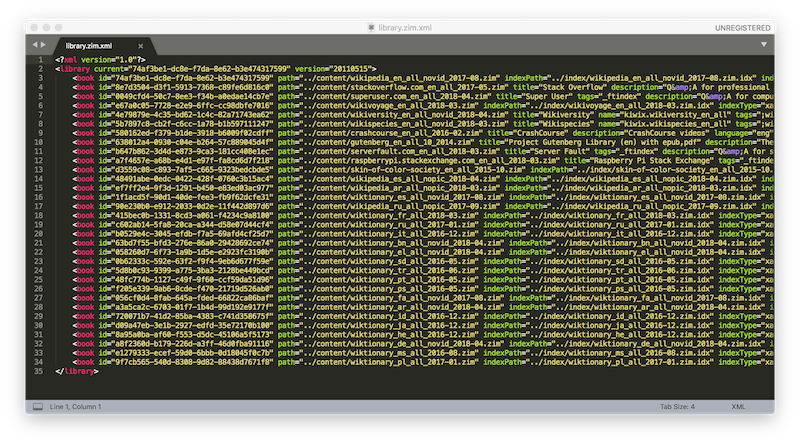

Initial Concept
This project started off by just trying to see if there was a way to save some or all of Wikipedia for offline access. In the beginning, it might have been just some techno-nostalgic analog of having a full encyclopedia set on one’s bookshelf, or in some desire for an early edition of the Encyclopedia Galactica or Hitchhiker’s Guide to the Galaxy. However, it eventually turned into a very fun rabbit hole in which I found several very cool projects that make Wikipedia—as well as other huge swaths of human knowledge—accessible without an internet connection.
Some of the main use cases I’ve seen for such projects as Kiwix and XOWA are to make educational and informational content available to areas with poor or no internet connection (there’s a story of a carrier pigeon transferring a 4 GB memory stick in South Africa in the time it took the data to transfer 4% on the regular internet connection).
Additional projects such as Khan Academy Lite make for an entire K-12 curriculum equipped with a full Learner Management System available to areas without internet.
In this project, I installed Kiwix onto a Raspberry Pi 3 set up for two different use cases:
-
The Portable Individual Offline Internet
Here, all of the data is on the Pi’s micro SD card (I’m using a 128GB, although it might even be worth it to go for a 256GB card). While it’s running, it can be accessed directly on the Pi with an attached touchscreen (I used a $30 one on Amazon ). For power, it can be plugged into the wall. Or for a complete desert island or zombie apocalypse scenario, you can use an external battery pack and a solar charger as a power source :)
-
The Home Data Center
Here, I’ve downloaded additional content onto a portable external hard drive. And when connected to a WiFi router, Kiwix will serve itself to anyone else on the local network via a local IP address.
Software and Hardware Requirements
The above configuration was by no means the only way to go about setting up such a content server, and initially there were a few different permutations I’d considered before arriving on the current setup.
Hardware Options |
||
|---|---|---|
| Pros | Cons | |
Raspberry Pi(chosen) |
|
|
Cheap tablet |
|
|
Old desktop/laptop |
|
|
Software Options |
||
| Pros | Cons | |
Kiwix(chosen) |
|
|
XOWA |
|
|
MediaWiki |
|
|
Content Options
In trying to gauge how much storage you’ll need (whether you're saving all the data on the Pi's SD card or using an external hard drive), below is a list of recommended content and the storage needed for each so that you can have a general idea of your storage requirements.
Kiwix-formatted content |
||
|---|---|---|
| Content | Size | |
WikipediaThe free encyclopedia |
87 GB 44 GB |
|
WikiSourcePublic domain library |
15 GB | |
WikiVoyageTravel Guide |
1 GB | |
WikiSpeciesSpecies directory |
2 GB | |
Project GutenbergProject Gutenberg offers over 57,000 free eBooks. These are largely books in the public domain, accessible via HTML or EPUB |
41 GB | |
WiktionaryWiktionary is a multilingual, web-based project to create a free content dictionary of all words in all languages |
50 MB - 2 GB |
|
Crash CourseCrash Course is an educational YouTube channel with courses from Astronomy to US History and Anatomy & Physiology. |
14 GB | |

|
Stack OverflowStack Overflow is the largest, most trusted online community for developers to learn, share their programming knowledge, and build their careers |
55 GB |
TED TalksTED Talks are influential videos from expert speakers on education, business, science, tech and creativity |
10-21 GB |
|
Non-Kiwix-formatted content |
||
KA LiteKA Lite is open-source software that mimics the online experience of Khan Academy for offline situations |
39 GB | |
| Total for all suggested content | ~350 GB | |
Setup
Prerequisites
- Raspberry Pi 3 and peripheries (keyboard, mouse, HDMI connector, power supply, touchscreen (optional))
- SD card (estimate your memory requirements based on the content section above)
- Another computer to do the initial work on (preferably with a pretty good internet connection as it might come to doing ~100Gb of downloading)
- (optional) Thumb drive or external hard drive (to download to your own computer instead of directly on the Pi and do transfers over)
Step 1: Set up NOOBs
This will be to set up the underlying operating system on your Raspberry Pi. If you already have a Pi set up, you can skip this step.
Instructions for this can be found here.
Step 2: Download Kiwix
For the Raspberry Pi, you will specifically need the ARM version of Kiwix (ARM referring to the
CPU architecture on a Raspberry Pi which makes for much more efficent power usage compared to other
CPU chips). This version of Kiwix won’t include a user interface as it would on a Mac or PC, but
rather the kiwix-serve and kiwix-manage tools that will enable you to
access your content via a regular web browser.
- The ARM download (recommended) is available here
- Other versions are available here
Once downloaded to your Pi, create a folder in your home directory called kiwix.
Create a folder within that called bin and put all of the files from the ARM download
into there. Our file structure on the Pi should look like so far:
~/ kiwix/ bin/ kiwix-index kiwix-install kiwix-manage kiwix-read kiwix-search kiwix-serveNext, create a data folder also in kiwix for the next step, and in
data, create three subfolders: content, index and
library. This should now give us:
~/ kiwix/ bin/ ... data/ content/ index/ library/
Now, create a file called library.xml in the data/library/ directory with
the following text in the file:
<?xml version="1.0"?> <library current="a8f2360d-b179-226d-a3ff-46d0fba91116" version="20110515"?> </library>Important Note: File Permissions
When I first downloaded these to my Pi, I couldn’t figure out why I wasn’t able to run them
through the command line. It turned out that the original file permissions for the
kiwix-tools executables were restricted so that they weren't actually
executable. Make sure to change the permissions of the files to be executable by at least
the default pi user.
Step 3: Download Kiwix Content and transfer it to your Pi
The overall goal of this step will be to incrementally copy the content from individual Kiwix downloads to create an aggregate collection of Kiwix content.
From the Kiwix content download page, try to do the fully indexed versions of the content. After
unzipping, you will have a folder somewhere along the lines of
kiwix-0.9+<content_name>.
For our purposes, we’re only going to be interested in
the subfolder called data. This folder will have 3 sub-folders: content,
index and library.
-
Content: Copy all of the files from the download’s
contentfolder to your Pi’sdata/contentfolder. -
Index: Copy the
__.zim.idxdirectory from the download’sindexfolder into your Pi’sdata/indexdirectory. -
Library: Open your
library.xmlfile in the Pi’sdata/librarydirectory as well as the xml file in the download’sdata/libraryfolder. Copy the full<book id=”...”></book>line and paste it into the Pi’slibrary.xmlfile.
(You can also look up the
kiwix-managedocumentation on how to use that script to import content into your library.
Step 4: Run kiwix-serve
Run the following command on your Pi:
~/kiwix/bin/kiwix-serve --library ~/kiwix/data/library/library.xml --port=8080Open a web browser on your Pi and go to http://localhost:8080.
Or, get your hostname by typing hostname -I and enter that IP address in a browser on
another computer connected to your local network with the port appended (E.g.
http://192.168.0.164:8080).
You should see a menu something like the one below.
Step 5: Browse, Learn and Enjoy!
Future ambitions
-
More automatic local network Mini router. Set up automatic script to start server on Pi startup. Make the IP static.
-
High data persistence M-Disk preservation.
-
Higher portability Solar charger and higher memory SD card
-
Offline development environment PyPi server.